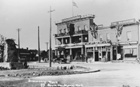

Home • Before Clergue • The Arrival • The Personality • Block House • Montfermier • Industrialization Process
Discovery Week • Collapse of the Empire • Rebirth • Clergue Letters
Discovery Week
In 1923, the City of Sault Ste. Marie hosted a New Ontario Soldiers’ Reunion and Discovery Week Celebration during the week of August 4th through August 8th. The celebration marked the 300th anniversary of the discovery of Lake Superior and the rapids in the St. Mary’s River by explorers Brule and Grenoble. This historical celebration was linked with a reunion of residents of Northern Ontario who had gone overseas during the First World War.
Francis H. Clergue was invited to attend and to participate in the celebrations. Specifically, he was asked to lay the cornerstone in the cenotaph to the war dead that was being erected in front of the Court House on Queen Street.
|  |
Clergue arrived in Sault Ste. Marie in time for the commencement of the festivities. The 4,000 residents who attended the opening ceremonies warmly received him. The Mayor of the City, James Dawson, officially welcomed him. As part of the opening activities, Clergue addressed the attendees gathered at the Arena. He recalled for them his arrival in Sault Ste. Marie and the development of the industrial base of the community. He also made reference to the many changes and improvements made in the community and complimented the City Fathers and community at large for their diligence and hard work.
The following day, August 5, 1923, Clergue laid the cornerstone in the cenotaph. After tokens were placed in the cornerstone by relatives of the war dead, the stone was raised. Clergue delivered the dedication address then placed the cornerstone with the words "I now declare this stone to be well and truly placed."
During the balance of his stay in Sault Ste. Marie, Clergue was made an honourary chief of the local band of Ojibway in recognition of his role in the development of Sault Ste. Marie and the District of Algoma and he was honoured at dinner hosted by the 119th Battalion.